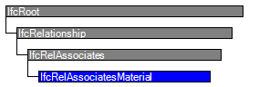

Natural language names
 | Ordnet Material zu - Relation |
 | Rel Associates Material |
 | Association de matériau |
| Ordnet Material zu - Relation |
| Rel Associates Material |
| Association de matériau |
| Item | SPF | XML | Change | Description | IFC2x3 to IFC4 |
|---|---|---|---|---|
| IfcRelAssociatesMaterial | ||||
| OwnerHistory | MODIFIED | Instantiation changed to OPTIONAL. | ||
| RelatedObjects | X | X | MODIFIED | Type changed from IfcRoot to IfcDefinitionSelect. |
IfcRelAssociatesMaterial is an objectified relationship between a material definition and elements or element types to which this material definition applies.
The material definition can be:
Materials can be arranged by layers and applied to layered elements. Typical elements are walls and slabs.
NOTE As a material layer set usage is an occurrence based information, that applies to each individual element, it cannot be assigned to an element type.
Material can be applied to profiles. Typical elements using profile material are beam, column, member
NOTE As a material profile set usage is an occurrence based information, that applies to each individual element, it cannot be assigned to an element type.
Materials can be arranged by identified parts of a component based element. Typical elements are dorrs/windows (with components such as lining, framing and glazing), or distribution elements.
NOTE See the material use definitions at each applicable subtype of IfcElement or IfcElementType for a provision of these keywords.
As a fallback, or in cases where only a single material information is needed, material information can be directly associated
DEPRECATED The use of IfcMaterialList is deprecated in IFC4 onwards. Use IfcMaterialConstituentSet instead.
The IfcRelAssociatesMaterial relationship is a special type of the IfcRelAssociates relationship. It can be applied to subtypes of IfcElement and subtypes of IfcElementType.
If both, the element occurrence (by an instance of IfcElement) and the element type (by an instance of IfcElementType, connected through IfcRelDefinesByType) have an associated material, then the material associated to the element occurrence overrides the material associated to the element type.
HISTORY New entity in IFC2x.
Informal Propositions:
| # | Attribute | Type | Cardinality | Description | C |
|---|---|---|---|---|---|
| 6 | RelatingMaterial | IfcMaterialSelect | [1:1] | Material definition assigned to the elements or element types. | X |
| Rule | Description |
|---|---|
| NoVoidElement | The material information must not be associated to a substraction feature (such as an opening) or to a virtual element. |
| AllowedElements | The material information, using IfcMaterialSelect should be associated to an element occurrence (including structural members) or an element type (including the door and window styles). Also port can have assigned materials, here indicating the fluid flowing from the port. |

| # | Attribute | Type | Cardinality | Description | C |
|---|---|---|---|---|---|
| IfcRoot | |||||
| 1 | GlobalId | IfcGloballyUniqueId | [1:1] | Assignment of a globally unique identifier within the entire software world. | X |
| 2 | OwnerHistory | IfcOwnerHistory | [0:1] |
Assignment of the information about the current ownership of that object, including owning actor, application, local identification and information captured about the recent changes of the object,
NOTE only the last modification in stored - either as addition, deletion or modification. | X |
| 3 | Name | IfcLabel | [0:1] | Optional name for use by the participating software systems or users. For some subtypes of IfcRoot the insertion of the Name attribute may be required. This would be enforced by a where rule. | X |
| 4 | Description | IfcText | [0:1] | Optional description, provided for exchanging informative comments. | X |
| IfcRelationship | |||||
| IfcRelAssociates | |||||
| 5 | RelatedObjects | IfcDefinitionSelect | S[1:?] | Set of object or property definitions to which the external references or information is associated. It includes object and type objects, property set templates, property templates and property sets and contexts. | X |
| IfcRelAssociatesMaterial | |||||
| 6 | RelatingMaterial | IfcMaterialSelect | [1:1] | Material definition assigned to the elements or element types. | X |
| # | Concept | Model View |
|---|---|---|
| IfcRoot | ||
| Software Identity | Common Use Definitions | |
| Revision Control | Common Use Definitions | |
<xs:element name="IfcRelAssociatesMaterial" type="ifc:IfcRelAssociatesMaterial" substitutionGroup="ifc:IfcRelAssociates" nillable="true"/>
<xs:complexType name="IfcRelAssociatesMaterial">
<xs:complexContent>
<xs:extension base="ifc:IfcRelAssociates">
<xs:sequence>
<xs:element name="RelatingMaterial">
<xs:complexType>
<xs:group ref="ifc:IfcMaterialSelect"/>
</xs:complexType>
</xs:element>
</xs:sequence>
</xs:extension>
</xs:complexContent>
</xs:complexType>
ENTITY IfcRelAssociatesMaterial
SUBTYPE OF (IfcRelAssociates);
RelatingMaterial : IfcMaterialSelect;
WHERE
NoVoidElement : SIZEOF(QUERY(temp <* SELF\IfcRelAssociates.RelatedObjects |
('IFCPRODUCTEXTENSION.IFCFEATUREELEMENTSUBTRACTION' IN TYPEOF(temp)) OR
('IFCPRODUCTEXTENSION.IFCVIRTUALELEMENT' IN TYPEOF(temp))
)) = 0;
AllowedElements : SIZEOF(QUERY(temp <* SELF\IfcRelAssociates.RelatedObjects | (
SIZEOF(TYPEOF(temp) * [
'IFCPRODUCTEXTENSION.IFCELEMENT',
'IFCPRODUCTEXTENSION.IFCELEMENTTYPE',
'IFCSHAREDBLDGELEMENTS.IFCWINDOWSTYLE',
'IFCSHAREDBLDGELEMENTS.IFCDOORSTYLE',
'IFCSTRUCTURALANALYSISDOMAIN.IFCSTRUCTURALMEMBER',
'IFCPRODUCTEXTENSION.IFCPORT']) = 0)
)) = 0;
END_ENTITY;
 EXPRESS-G diagram
EXPRESS-G diagram Link to this page
Link to this page